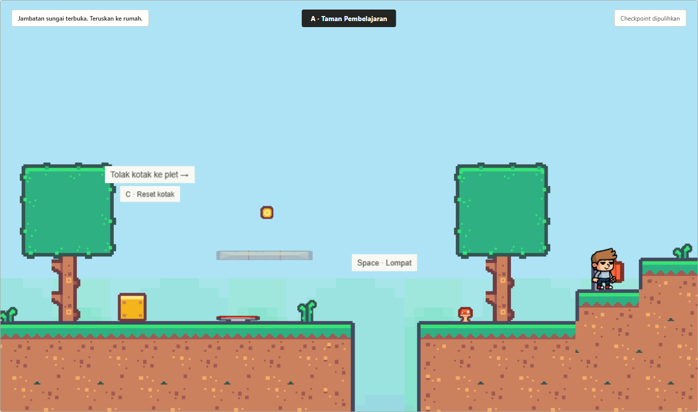
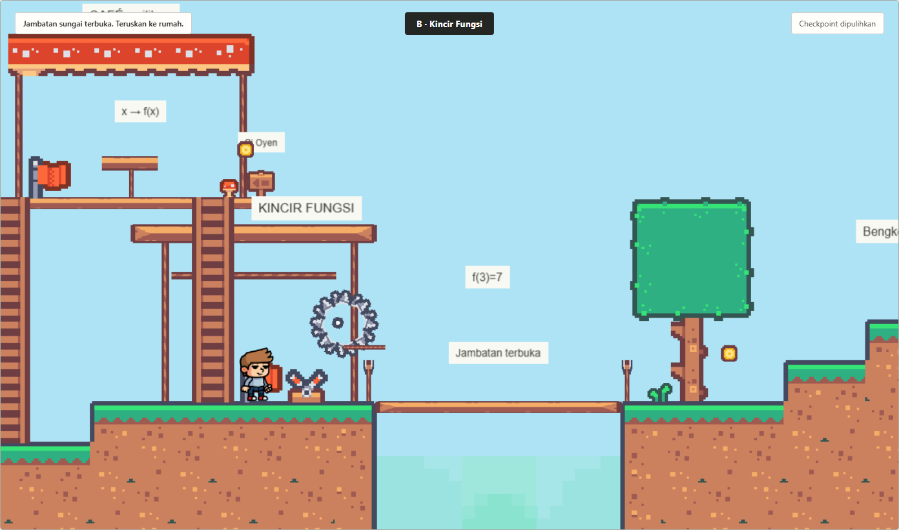
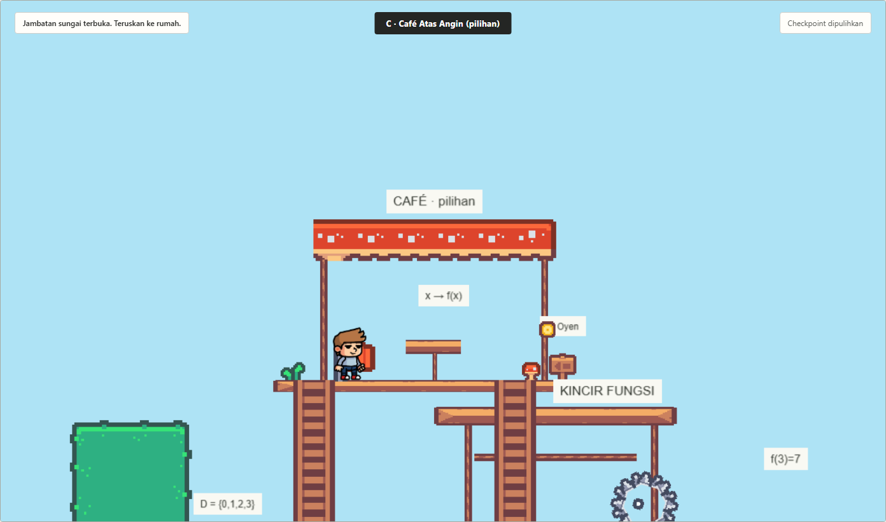
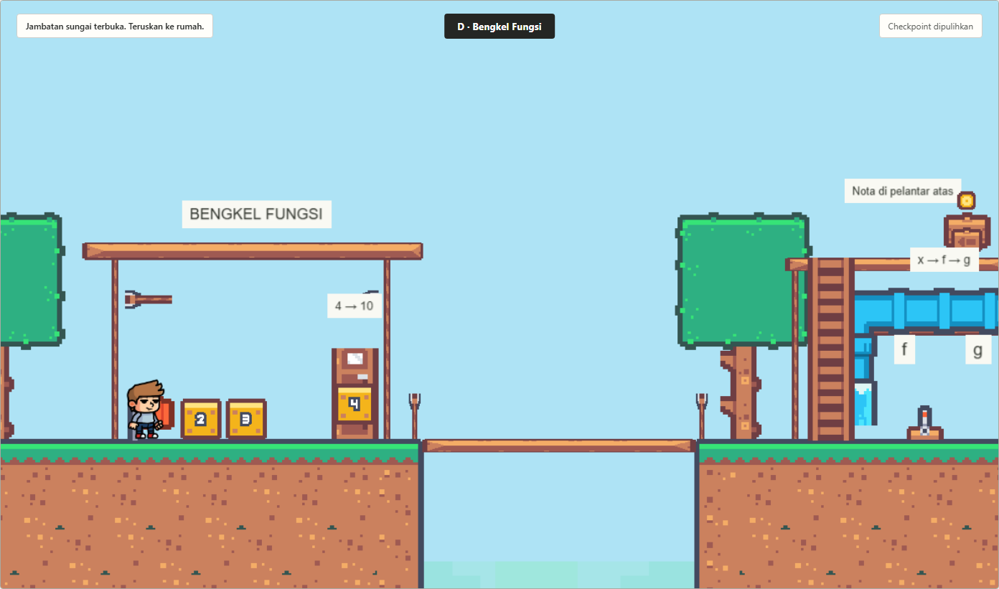
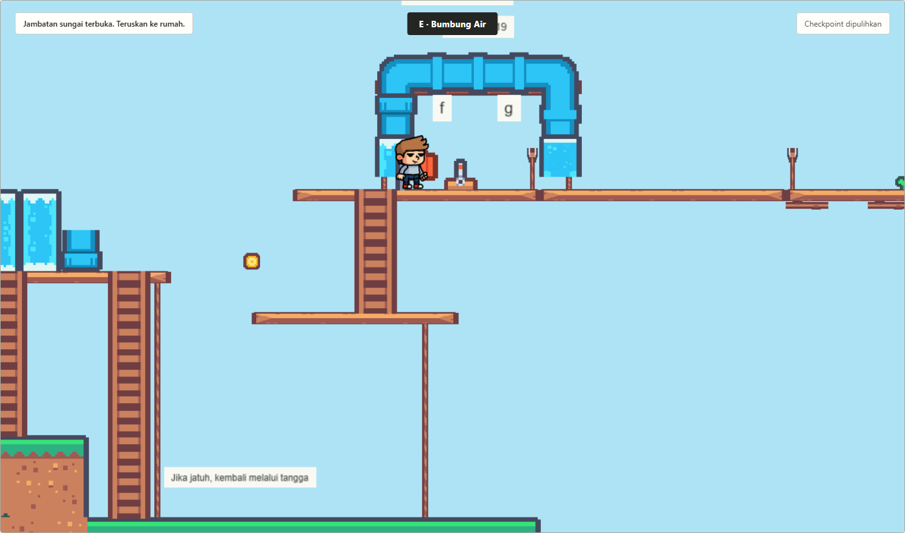
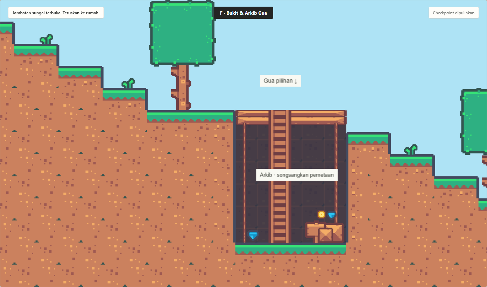
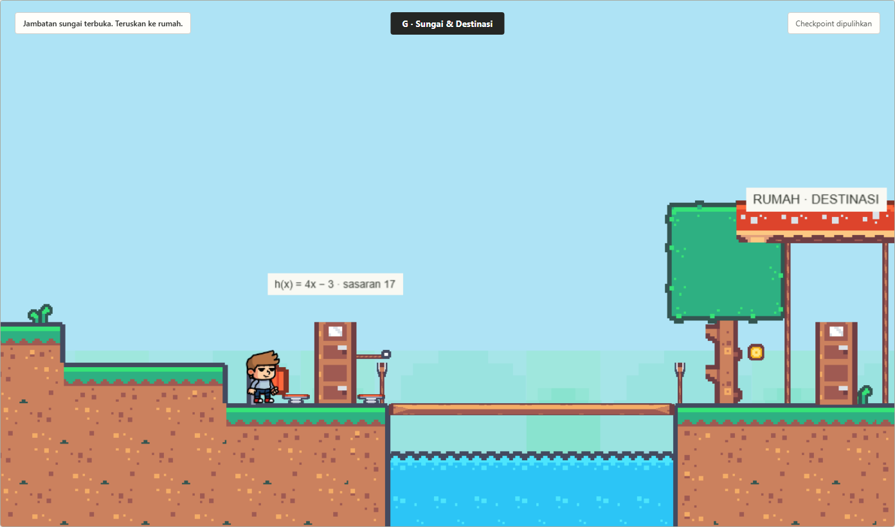

V10 ? Actual world review
8400 ? 1600 ? A ? B ? D ? E ? F ? G ? C optional
These are fixed-camera screenshots of the playable game using solved-save fixtures. They show composition, not traversal proof. The report links separate fresh-save keyboard and multi-touch runs. The supplied V10.1 illustration is the composition reference; modular Base-pack buildings and cave detailing remain visually simpler.Implementation report and validation
A ? Learning GardenOpen full resolution
B ? Gear MillOpen full resolution
C ? Upper Cafe (optional)Open full resolution
D ? Function WorkshopOpen full resolution
E ? Roof WaterworksOpen full resolution
F ? Hill / CaveOpen full resolution
G ? River / HomeOpen full resolution